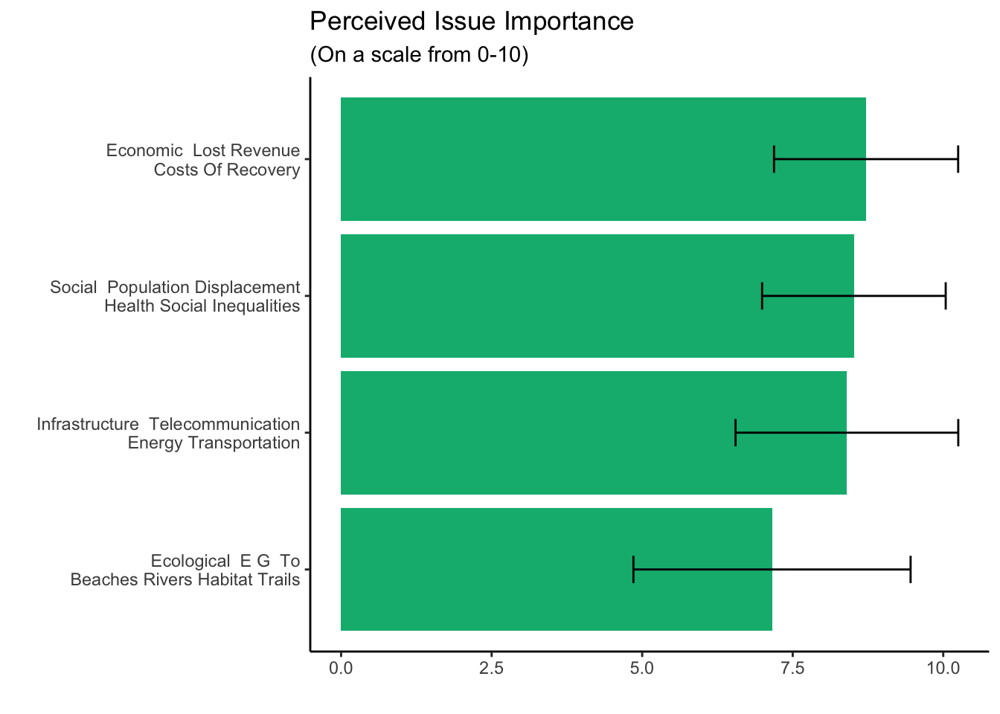

library(tidyverse)
library(qualtRics)
library(janitor)
library(Hmisc)
library(visNetwork)
library(igraph)
library(MetBrewer)
knitr::opts_knit$set(root.dir = rprojroot::find_rstudio_root_file())
knitr::opts_chunk$set(echo = TRUE, message = FALSE, warning = FALSE)Southeast Texas Flood Governance
A network analysis
Qualtrics
Using the qualtRics package the surveys were pulled directly from Qualtrics. In order to connect to the Qualtrics API, you must have UT staff privileges. Any UT student must have their privileges updated by contacting UT IT Services. Your Qualtrics API can be accessed through account settings in the “Qualtrics IDs” section.
Do not, I repeat, DO NOT upload your API key to github or the repo will be erased.
# Connecting to the Qualtrics API
# There's always problem with the api. Make sure they haven't changed your key.....
# set your api key using Sys.setenv("NAME" = "API KEY")
qualtrics_api_credentials(
api_key= Sys.getenv("QUALTRICS_API_KEY"),
base_url = Sys.getenv("QUALTRICS_BASE_URL"))
#Pulling the organization and students surveys
surveys <- all_surveys()
#Finding the row index for organization and student surveys
survey_number <- which(surveys$name=="Southeast Texas Flood Governance Survey - V2", arr.ind=TRUE)
survey_raw <- fetch_survey(surveyID = surveys$id[survey_number], force_request = TRUE)
|
| | 0%
|
|======================================================================| 100%The main challenge with data cleaning is compiling the responses from the survey that are separated out over multiple columns. In order to make things more comprehensible, the data set is broken up into thematic areas. Each of these will have a response id and organization name, so they can be recombined at the end to make comparison and create specialized data sets.
Data-wide cleaning
df <- survey_raw
#changing the colnames to their labels
colnames(df) <- label(df)
df <- df |>
clean_names() |>
#removing surveys that weren't completed
filter(!is.na(ip_address),
progress == 100) |>
#removing unnecessary columns
select(-c(start_date:recorded_date,external_data_reference:user_language)) |>
#renaming columns to make it comprehensible
rename(name = starts_with("what_is_the_name"),
org_type = starts_with("what_best_represents"))
dim(df)[1] 32 819The data set contains 32 responses and 819 columns
Drivers and Impact
Perceived drivers and impact of flooding.
drivers <- df |>
select(
response_id,
name,
starts_with("below_are_a_list_of_drivers"),
starts_with("below_are_a_list_of_flood")
) |>
#renaming for comprehensibility purposes
rename_with(
~ gsub(
'below_are_a_list_of_drivers_of_flood_risk_using_the_slider_tool_please_indicate_how_important_each_issue_below_is_to_you_your_organization_1_not_important_10_extremely_important',
'drivers',
.x
)
) |>
rename_with(
~ gsub(
'below_are_a_list_of_flood_impacts_using_the_slider_tool_please_indicate_how_important_each_issue_below_is_to_you_your_organization_1_not_important_10_extremely_important',
'impacts',
.x
)
)There were two sets of questions referring to each
driver_bar <- drivers |>
select(name, 3:7) |>
pivot_longer(cols = starts_with("drivers"),
names_to = "driver",
values_to = "value") |>
filter(!is.na(value)) |>
mutate(driver = gsub("drivers", "", driver),
driver = gsub("_", " ", driver),
driver = str_to_title(driver)) |>
group_by(driver) |>
dplyr::summarize(avg = mean(value, na.rm = TRUE), sd = sd(value, na.rm = TRUE))
driver_bar$driver[driver_bar$driver == " Geographic And Geophysical Factors Topography Proximity To Water Bodies"] <- "Geographic And Geophysical Factors\n Topography Proximity To Water Bodies"
theme_set(theme_classic())
ggplot(driver_bar, aes(reorder(driver, avg), avg)) +
geom_bar(stat = "identity", fill = "#007ba5") +
scale_fill_manual(values=met.brewer("Egypt", 5)) +
labs(title = "Perceived Drivers of Flooding Risk",
subtitle = "(On a scale from 0-10)",
x = "",
y = ""
) +
coord_flip() +
geom_errorbar(aes(ymin=avg-sd,
ymax=avg+sd),
width = .2) 
impact_bar <- drivers |>
select(name, 10:13) |>
pivot_longer(cols = starts_with("impac"),
names_to = "impact",
values_to = "value") |>
filter(!is.na(value)) |>
mutate(impact = gsub("impacts", "", impact),
impact = gsub("_", " ", impact),
impact = str_to_title(impact)) |>
group_by(impact) |>
dplyr::summarize(avg = mean(value, na.rm = TRUE), sd = sd(value, na.rm = TRUE))
impact_bar$impact[impact_bar$impact == " Ecological E G To Beaches Rivers Habitat Trails"] <- "Ecological E G To\n Beaches Rivers Habitat Trails"
impact_bar$impact[impact_bar$impact == " Economic Lost Revenue Costs Of Recovery"] <- "Economic Lost Revenue\n Costs Of Recovery"
impact_bar$impact[impact_bar$impact == " Infrastructure Telecommunication Energy Transportation"] <- "Infrastructure Telecommunication\n Energy Transportation"
impact_bar$impact[impact_bar$impact == " Social Population Displacement Health Social Inequalities"] <- "Social Population Displacement\n Health Social Inequalities"
theme_set(theme_classic())
ggplot(impact_bar, aes(reorder(impact, avg), avg)) +
geom_bar(stat = "identity", fill = "#00b67e") +
scale_fill_manual(values=met.brewer("Egypt", 5)) +
labs(title = "Perceived Issue Importance",
subtitle = "(On a scale from 0-10)",
x = "",
y = ""
) +
coord_flip() +
geom_errorbar(aes(ymin=avg-sd,
ymax=avg+sd),
width = .2)
Collaboration
collab <- df |>
select(
response_id,
name,
org_type1,
starts_with("section_2"),
starts_with("continued_information")
) |>
rename_with(
~ gsub(
'section_2_information_sharing_and_collaboration_networks_across_the_southeast_texas_below_you_will_see_a_list_of_texas_state_and_federal_agencies_that_work_within_and_across_the_southeast_texas_geography_of_interest_considering_the_past_2_years_whom_you_go_to_flood_related_meetings_virtually_or_in_person_receive_or_share_advice_or_information_or_implement_projects_within_or_across_the_southeast_texas_region_select_all_that_apply',
'collab',
.x
)
) |>
rename_with(
~ gsub(
'continued_information_sharing_and_collaboration_networks_across_the_southeast_texas_below_you_will_see_a_list_of_agencies_and_organizations_that_dont_have_a_defined_jurisdiction_in_the_southeast_texas_but_may_be_a_part_of_your_network_among_the_list_below_please_consider_within_the_past_2_years_whom_you_go_to_flood_related_meetings_receive_or_share_advice_or_information_or_implement_projects_within_or_across_the_southeast_texas_select_all_that_apply',
'collab',
.x
)
) |>
rename_with(
~ gsub(
'continued_information_sharing_and_collaboration_networks_across_the_southeast_texas_please_list_additional_organizations_groups_below_group_number',
'other_orgs',
.x
)
) |>
rename(addition_orgs = "continued_information_sharing_and_collaboration_networks_across_the_southeast_texas_can_you_think_of_other_agencies_or_organizations_not_listed_previously_with_whom_your_organization_goes_to_meetings_receives_or_shares_advice_or_information_or_implements_projects_within_or_across_the_southeast_texas_region")Network
#First create a long dataframe with organizations and their partners
collab_edges <- collab |>
select(name, starts_with("collab")) |>
pivot_longer(cols = starts_with("collab"),
names_to = "organization",
values_to = "partner") |>
filter(!is.na(partner)) |>
mutate(organization = gsub("partner", "", organization),
organization = gsub("_", " ", organization),
organization = gsub("collab", "", organization),
organization = str_to_title(organization)) |>
select(-partner)
node_type <- collab |>
select(name, org_type1) |>
mutate(org_type1 = as.character(org_type1),
org_type1 = case_when(
org_type1 == "County agency" ~ "County",
org_type1 == "State agency" ~ "State",
org_type1 == "Federal agency" ~ "Federal",
TRUE ~ org_type1
))
g <- graph_from_data_frame(d=collab_edges,directed=TRUE)
degrees <-as.data.frame(igraph::degree(g)) |>
rename("value" = 1) |>
rownames_to_column(var = "ego")
gvis <- toVisNetworkData(g)
met_pallete_org <- MetBrewer::met.brewer(name="Isfahan2",n=8)
met_pallete_org <- as.character(met_pallete_org)
nodes <- gvis$nodes
nodes <- nodes |>
left_join(degrees, by = c("id" = "ego") ) |>
left_join(node_type, by = c("id" = "name")) |>
mutate(color = case_when(
org_type1 == "Nonprofit" ~ "#D7ACA1",
org_type1 == "Academia" ~ "#DAB745",
org_type1 == "County" ~ "#CEBD09",
org_type1 == "State" ~ "#95B22E",
org_type1 == "Federal" ~ "#65AF66",
org_type1 == "Municipal" ~ "#3DB4B2",
org_type1 == "Other" ~ "#4063A3",
is.na(org_type1) ~ "#3992B7"
))
nodes <- nodes |>
select(everything(), -org_type1)
edges <- gvis$edges
collab_network <-
visNetwork(
nodes,
edges,
main = "Southeast Texas Flood Governance",
width = "100%",
height = "850px"
) |>
visEdges(
smooth = T,
arrows = list(
to = list(enabled = TRUE, scaleFactor = .5),
width = 3
),
color = list(highlight = "black")
) |>
visNodes(color = list(
background = "white",
border = "black",
highlight = list(background = "#A9A9A9", border = "black"),
hover = list(background = "#A9A9A9", border = "black")
)) |>
visPhysics(stabilization = FALSE) |>
visIgraphLayout(
smooth = FALSE,
physics = FALSE,
randomSeed = 27
) |>
visInteraction(navigationButtons = TRUE)
collab_networkWho do you work with?
- Separated into “respond recover or rebuild” and prepare
rrr <- df |>
select(
name,
starts_with("who_do_you_work_with_to_respond")
) |>
rename_with(
~ gsub(
'who_do_you_work_with_to_respond_recover_or_rebuild_the_following_impacts_of_flooding_of_importance_to_you_your_organization_',
'',
.x
)
)
pre <- df |>
select(
name,
starts_with("who_do_you_work_with_to_prepare")
) |>
rename_with(
~ gsub(
'who_do_you_work_with_to_prepare_for_and_mitigate_the_following_drivers_of_flooding_of_importance_to_you_your_organization',
'',
.x
)
)Respond
#Going from wide to long
rrr2 <- rrr |>
#the index numbers have to be changed for different surveys
pivot_longer(cols = 2:313,
names_to = "organization",
values_to = "rrr") |>
filter(!is.na(rrr)) |>
mutate(organization = gsub("_social_impacts", "", organization),
organization = gsub("_infrastructure_impacts", "", organization),
organization = gsub("_ecological_impacts", "", organization),
organization = gsub("_economic_impacts", "", organization),
organization = gsub("_other_number_1", "", organization),
organization = gsub("_", " ", organization),
organization = str_to_title(organization)
)Prepare
pre2 <- pre |>
#the index numbers have to be changed for different surveys
pivot_longer(cols = 2:313,
names_to = "organization",
values_to = "pre") |>
filter(!is.na(pre)) |>
mutate(organization = gsub("_changing_precipitation_and_weather_patterns", "", organization),
organization = gsub("_geographic_and_geophysical_factors", "", organization),
organization = gsub("_physical_roads_and_drainage_infrastructure", "", organization),
organization = gsub("_population_growth_and_distribution_of_people", "", organization),
organization = gsub("_socio_economic_factors_and_local_economy", "", organization),
organization = gsub("_other", "", organization),
organization = gsub("_", " ", organization),
organization = str_to_title(organization)
)Quality of Relations
info <- df |>
select(
name,
starts_with("generally_speaking")
) |>
rename_with(
~ gsub(
'generally_speaking_the_information_provided_by_the_following_organizations_is_',
'',
.x
)
)
con <- df |>
select(
name,
starts_with("how_confident_are_you")
) |>
rename_with(
~ gsub(
'how_confident_are_you_in_this_organizations_capacity_to_minimize_the_impacts_of_',
'',
.x
)
)Information
info2 <- info |>
#the index numbers have to be changed for different surveys
pivot_longer(cols = 2:53,
names_to = "organization",
values_to = "info") |>
filter(!is.na(info)) |>
mutate(organization = gsub("_", " ", organization),
organization = str_to_title(organization))Confidence
con2 <- con |>
#the index numbers have to be changed for different surveys
pivot_longer(cols = 2:53,
names_to = "organization",
values_to = "con") |>
filter(!is.na(con)) |>
mutate(organization = gsub("_", " ", organization),
organization = str_to_title(organization))